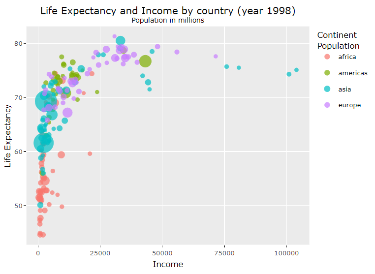
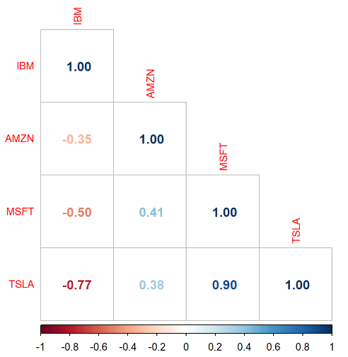
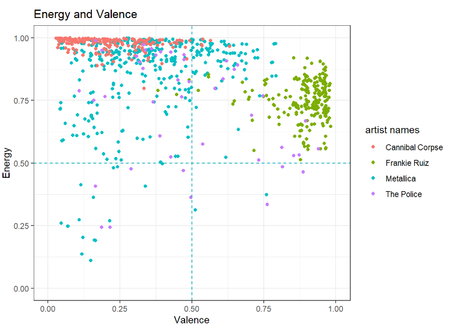
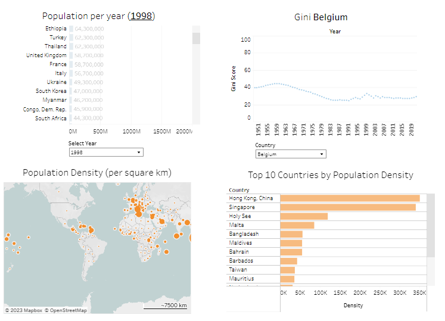

This script uses the data from the Gapminder to create a dynamic plot of 200 years of data considering three variables
(Life expectancy, Income, and Population). The reference for this project is the work done by professor Hans Rosling
(link).

This project uses the API of alphavantager to get intraday prices. With this script, you can find intraday correlations
and measure the risk exposure for short-term strategies..

This project takes the Spotify API to get data from different artists. This data can be used to find insights about a specific
artist or make comparisons between other groups and bands. For instance, the previous plot shows the energy and valence between
four artists (the dots are their albums).
This plot helps to characterize the artists based on their positiveness (valence) and energy. For example, Cannibal Corpse and
Frankie Ruiz both share high energy but their valence is completely different, making Frankie Ruiz's music more cheerful and positive.
This type of analysis helps to characterize the artist by measuring their musical features.

This script is designed to clean a dataset from Gapminder, which will be published later on a Tableau dashboard. The first step involves
obtaining the data from the Gapminder website. After that, the script joins and cleans the files to create a single dataset, making it
easier to use in Tableau.